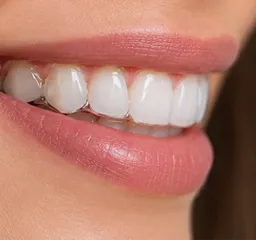
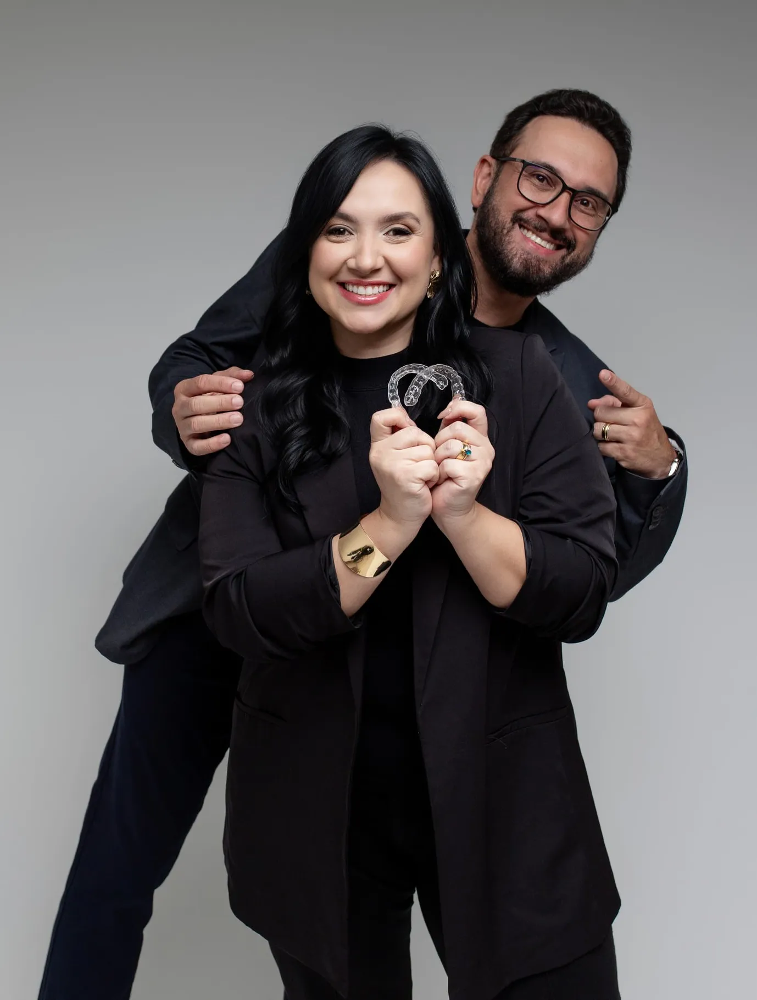
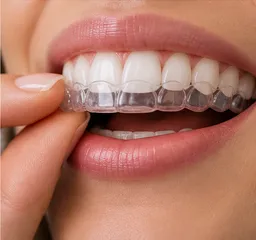
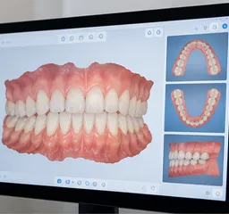
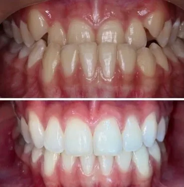
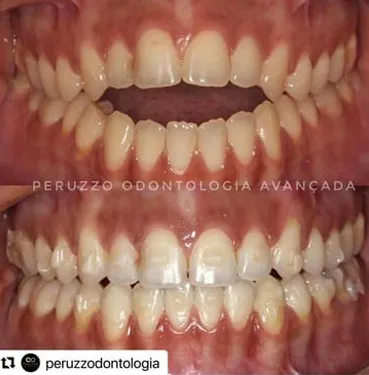
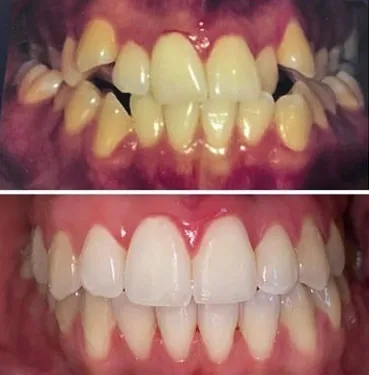
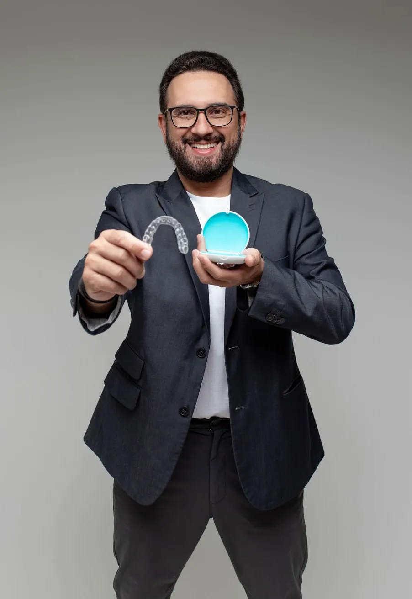

Discreto de verdade
Placas finas e transparentes para tratar sem alterar sua aparência no dia a dia.

Conheça o tratamento com os alinhadores invisíveis na Peruzzo Odontologia Avançada. Planejamento digital, atendimento personalizado e acompanhamento profissional para cuidar do seu sorriso.
Atendimento individualizado · Planejamento digital · Acompanhamento profissional

Pelo terceiro ano consecutivo, a Peruzzo Odontologia Avançada recebe o reconhecimento Eleita pela ClearCorrect, reforçando nosso compromisso com a ortodontia digital e o tratamento com alinhadores transparentes.
Cada caso é único. Somente após avaliação clínica e exames é possível indicar se o ClearCorrect é adequado para você. Resultados variam entre pacientes.
Sequência de placas transparentes personalizadas que movimentam os dentes de forma gradual, com planejamento digital e trocas acompanhadas pela equipe.

Placas finas e transparentes para tratar sem alterar sua aparência no dia a dia.

Sem fios ou bráquetes. Removível para comer, beber e fazer higiene completa.

Mapa digital do movimento dentário para acompanhar a evolução com previsibilidade.
Ideal para quem fala em público, atende clientes ou aparece em vídeos e fotos.
Escovação e fio dental sem obstáculos do aparelho fixo.
Sem fio soltando ou peça quebrando no meio da semana.
Use 20-22h/dia conforme orientação e retire apenas para refeições e higiene.
Processo claro, do primeiro contato à contenção.
Entendemos sua queixa, histórico e expectativas. Exame clínico + fotos e documentação quando indicados.
Moldagem digital e simulação do movimento. Você visualiza a proposta antes de iniciar.
Sequência de alinhadores transparentes invisíveis feita para o seu caso.
Trocas em casa conforme protocolo e retornos para ajustes e controle da evolução.
Refinamentos se necessários e contenção para manter o resultado conquistado.
| Critério | ClearCorrect* | Metálico fixo |
|---|---|---|
| Aparência | Quase invisível | Visível |
| Alimentação/higiene | Removível | Fixo, exige mais cuidado |
| Conforto | Sem fios | Pode causar atrito |
*Indicação depende de avaliação. Nem todos os casos ortodônticos são tratáveis apenas com alinhadores.



*Imagens autorizadas pelos nossos pacientes.
Sim! Os alinhadores transparentes invisíveis utilizam tecnologia digital para planejar movimentos dentários e podem corrigir diversos problemas de alinhamento e mordida. A indicação depende de uma avaliação individualizada.
Para que o tratamento evolua conforme o planejamento, geralmente é necessário utilizar os alinhadores de 20 a 22 horas por dia, retirando-os para comer, beber líquidos diferentes de água e realizar a higiene bucal.
A duração varia conforme a complexidade do caso e as necessidades de cada paciente. Após a avaliação e o planejamento digital, é possível estimar o tempo de tratamento.
★★★★★Faço tratamento há pouco mais de um ano e está sendo incrível, o resultado foi super rápido e sou sempre muito bem atendida na clínica. Indico de olhos fechados e, inclusive, minha mãe também iniciou o tratamento com eles depois de ver meu resultado.
★★★★★Desde quando fiz a primeira avaliação fui muito bem recepcionada, o que fez total diferença na minha decisão. Hoje, uso os alinhadores invisíveis, faço esse acompanhamento e sempre estão dispostos a solucionar minhas dúvidas - a equipe como um todo! Além de sempre serem muito compreensíveis e proporcionarem as melhores propostas financeiras. Indico!
★★★★★Estou fazendo tratamento com aparelho invisível na clínica e minha experiência tem sido excelente. Atendimento impecável, profissionais atenciosos e muito competentes. Desde a recepção até as consultas, sempre fui muito bem acolhida. Estou super satisfeita com os resultados. Super recomendo!
★★★★★Estou fazendo o meu tratamento na Peruzzo Odontologia e o resultado com os alinhadores foi incrivelmente rápido. Excelente atendimento, superindico a todos! Todos os profissionais estão de parabéns pelo trabalho.
★★★★★Simplesmente o melhor consultório. O atendimento é excelente desde a recepção, profissionais capacitados para atender de uma forma única. Sobre os profissionais (dentistas) a minha experiência é a melhor possível com todos que já me atenderam, excelentes profissionais. Estou fazendo o tratamento com o alinhador e simplesmente estou achando perfeito, meus dentes melhoraram 100%. Local é lindo e super moderno, super indico.
★★★★★“Minha avaliação foi muito positiva. Fui bem atendido, recebi todas as explicações sobre o tratamento com alinhadores invisíveis e o processo estar sendo conduzido com profissionalismo. A equipe demonstrou atenção e tirou minhas dúvidas com clareza. Recomendo!”
★★★★★Excelente atendimento, cortesia, sorriso e o jeito encantador de se preocupar com os clientes. Ademais, faço tratamento com alinhadores e a evolução foi bem rápida, pois antes fazia com o aparelho tradicional, e por questões de saúde, me indicaram esse novo tratamento, sempre facilitando e proporcionando o melhor para o paciente e cliente!
★★★★★Fiz meu tratamento com alinhadores invisíveis e estou extremamente satisfeita. Dentistas competentes, atendimento ímpar e o resultado rápido e impecável. Indico!

Cirurgião-dentista | Especialista em Ortodontia | Speaker ClearCorrect
Com atuação em ortodontia e alinhadores transparentes, o Dr. Cleomar Peruzzo utiliza planejamento digital e acompanhamento individualizado para oferecer tratamentos adequados às necessidades de cada paciente.
Agende sua avaliação e descubra se os alinhadores transparentes invisíveis são indicados para você.
Agendar minha avaliação Atendimento em São Luís - MASeg–Sex: 8h às 18h · Sáb: 8h às 12h
WhatsApp agendamento: (98) 98907-2316
Agendar agora